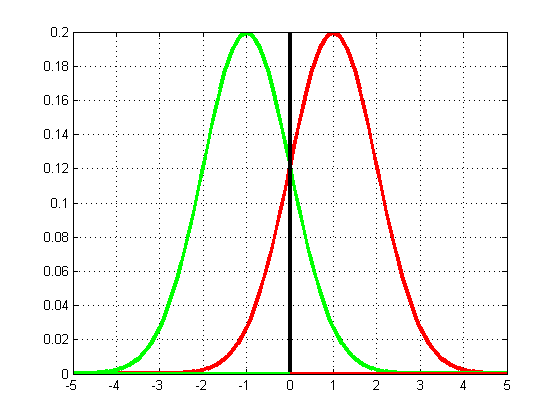
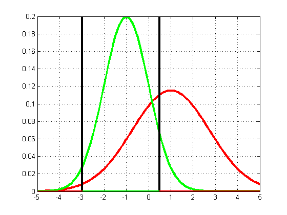

Contents
function discrimAnalysisDboundariesDemo1d
Discriminative Analysis Demo 1D
figure
plotgaussians1d(1, -1, 1, 1, 0.5)
printPmtkFigure dboundaries1dConnected
figure
plotgaussians1d(1, -1, 3, 1, 0.5)
printPmtkFigure dboundaries1dDisconnected
b =
0
b =
-2.9919
0.4919
 
end
function plotgaussians1d(mu1, mu2, s1, s2, pi1)
pi2 = 1-pi1;
xs = -5:0.1:5;
p1 = gausspdf(xs, mu1, s1);
p2 = gausspdf(xs, mu2, s2);
plot(xs, pi1*p1, 'r-', 'linewidth', 3);
hold on
plot(xs, pi2*p2, 'g-', 'linewidth', 3);
grid on
xmin = min(xs); xmax = max(xs);
syms x
b = double(solve(pi1*normpdf(x,mu1,s1) - pi2*normpdf(x,mu2,s2)));
b = sort(b)
pmax = max(max(pi1*p1), max(pi2*p2));
h = line([b(1) b(1)], [0 pmax]); set(h, 'color', 'k', 'linewidth', 3);
if length(b)>1
h = line([b(2) b(2)], [0 pmax]); set(h, 'color', 'k', 'linewidth', 3);
end
e = 0;
if length(b)==1
h = line([xmin b], [e e]); set(h, 'color', 'g', 'linewidth', 3);
h = line([b xmax], [e e]); set(h, 'color', 'r', 'linewidth', 3);
else
h = line([b(1) b(2)], [e e]); set(h, 'color', 'g', 'linewidth', 3);
h = line([xmin b(1)], [e e]); set(h, 'color', 'r', 'linewidth', 3);
h = line([b(2) xmax], [e e]); set(h, 'color', 'r', 'linewidth', 3);
end
end